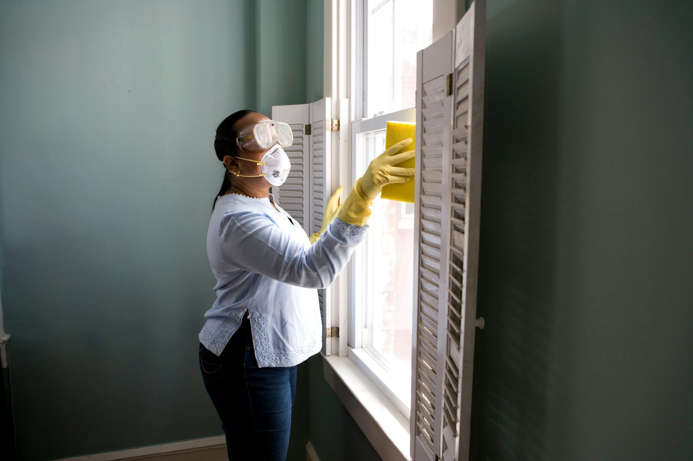

Mold is more than an unsightly nuisance — it's a serious health hazard and a sign of underlying moisture problems that threaten your property's structural integrity. Mold exposure can cause respiratory issues, allergic reactions, headaches, and more severe health effects, particularly in children, the elderly, and individuals with compromised immune systems. At Yakima Restoration Co, our IICRC-certified mold remediation technicians follow strict industry protocols to safely contain, remove, and prevent mold in Yakima homes and commercial properties.
Effective mold remediation goes far beyond simply scrubbing visible mold off surfaces. Professional remediation requires identifying the moisture source feeding the mold, establishing proper containment to prevent cross-contamination, removing affected materials safely using HEPA-filtered equipment, treating remaining surfaces with antimicrobial solutions, and addressing the underlying moisture problem to prevent recurrence. Our comprehensive approach ensures that mold is eliminated at the source, not just temporarily hidden.
We begin every mold remediation project with a thorough inspection and assessment, often including air quality testing to determine the type and concentration of mold spores present. This scientific approach allows us to develop a targeted remediation plan that addresses your specific situation. Throughout the project, we maintain negative air pressure containment, use HEPA air scrubbers, and follow IICRC S520 standards for mold remediation. Post-remediation verification, including clearance air testing when requested, confirms that your property meets safe occupancy standards.

When to Call for Mold Remediation in Yakima
Catching these issues early helps you avoid costly problems and protect your property. Here are the most common indicators that it's time to call a professional:
- Visible mold growth on walls, ceilings, flooring, or other surfaces in any color
- Persistent musty or earthy odors especially in enclosed or humid areas
- Recurring respiratory symptoms, allergies, or headaches that improve when away from home
- Recent water damage or flooding that was not professionally dried
- Condensation forming regularly on windows, walls, or cold surfaces
- Dark staining or discoloration on walls, ceilings, or around HVAC vents
- Peeling wallpaper, bubbling paint, or warped materials indicating hidden moisture
Act Before It Gets Worse
Many water damage problems start small but can escalate quickly into costly emergencies. If you notice any of these signs, contact Yakima Restoration Co at (657) 505-1189 for a prompt evaluation.
Mold Remediation Issues? We Can Help.
Get a free estimate from our expert team today.
Call (657) 505-1189 TodayFrequently Asked Questions About Mold Remediation
Why Professional Mold Remediation Matters
Mold remediation is not a DIY project. Disturbing mold colonies without proper containment sends millions of spores airborne, potentially contaminating previously unaffected areas of your home and creating worse health exposure than the original problem. Professional mold remediation uses negative air pressure containment, HEPA-filtered air scrubbers, and personal protective equipment to ensure mold spores are captured and contained during the removal process.
Additionally, professional mold remediation addresses the root cause of mold growth — the moisture source. Simply removing visible mold without correcting the underlying moisture problem guarantees the mold will return, often within weeks. Certified remediation technicians have the training and equipment to identify hidden moisture sources, dry affected areas properly, and implement solutions that prevent recurrence.
What to Expect From Our Mold Remediation
We follow a proven process to ensure every job is completed to the highest standards. Here's how we handle mold remediation from start to finish:
Inspection & Testing
Our certified technician inspects your property, identifies visible and hidden mold growth, determines the moisture source, and may collect air or surface samples for laboratory analysis.
Containment & Filtration
We establish negative air pressure containment using polyethylene barriers and HEPA air scrubbers to prevent mold spores from spreading to unaffected areas during removal.
Mold Removal & Treatment
Affected materials are carefully removed and disposed of following EPA guidelines. Remaining structural surfaces are treated with professional-grade antimicrobial solutions.
Moisture Correction & Verification
We address the underlying moisture source, complete any necessary drying, and perform post-remediation verification to confirm successful remediation before releasing containment.
Questions About Mold Remediation?
Call Yakima Restoration Co to discuss your mold remediation needs with a IICRC-certified technician.
Get Help: (657) 505-1189How to Prevent Mold Remediation Problems
A little prevention goes a long way in avoiding expensive restoration emergencies. Follow these tips from our IICRC-certified technicians:
- Keep indoor humidity below 60% (ideally 30-50%) using dehumidifiers and proper ventilation
- Fix water leaks within 24 hours — mold needs only moisture and 24-48 hours to begin growing
- Ensure bathrooms, kitchens, and laundry areas have adequate exhaust ventilation
- Use mold-resistant drywall and paint in moisture-prone areas like bathrooms and basements
- Clean and maintain HVAC systems and change filters regularly to prevent mold in ductwork
- Ensure crawl spaces are properly ventilated and consider installing vapor barriers
- Address condensation issues on windows, pipes, and cold surfaces promptly
Should You DIY or Call a Pro?
While some minor restoration tasks can be handled by handy homeowners, most water damage work requires professional expertise, specialized equipment, and proper safety training. Here's a comparison:
| Factor | DIY Approach | Professional Service |
|---|---|---|
| Health Safety | Disturbing mold releases dangerous spores | Full containment and PPE prevent exposure |
| Cross-Contamination | Spores spread to unaffected areas | Negative air containment prevents spread |
| Thoroughness | Surface cleaning leaves hidden mold | Complete removal including hidden growth |
| Root Cause | Mold returns without moisture correction | Identify and fix the moisture source |
| Verification | No way to confirm complete removal | Post-remediation testing confirms success |
| Property Value | Improper remediation may affect sale | Documented professional remediation protects value |
Get Mold Remediation Help Today
Don't let water damage problems get worse. Call Yakima Restoration Co now for prompt, professional service.
Call (657) 505-1189 Now